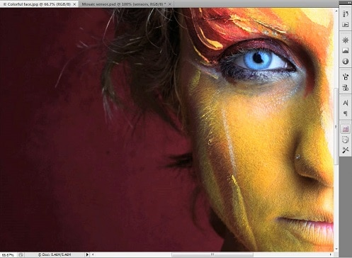

В нынешнее время хочется как можно больше запомнить важные моменты и практически уже не обойтись, без фотоаппарата. При отдыхе с друзьями, поездке за границу или просто в кругу семьи, хочется сохранить этот момент на снимке. Но практически любое фото, вне зависимости того, на что производилась фотосъемка, требует дополнительных корректировок. Внести улучшения, можно с помощью фоторедактора, а именно самого востребованного в наши дни — Adobe Photoshop на русском.

Преимущества и возможности Фотошоп CS4
На данный момент, самой популярной версией данной программы, является Photoshop CS4, в которой существенно обновили функционал, добавив массу нововведений, и устранили много недоработок с предыдущих версий. С помощью Photoshop, можно не только корректировать Ваши фото, но и профессионально работать с компьютерной графикой, добавлять различные эффекты, создавать новые изображения и сложные 3D объекты. В многих странах мира, Photoshop используют большинство IT компаний, которые занимаются веб-дизайном. Для любого специалиста в данной отрасли, такая программа есть незаменимая вещь в его работе.
Недостатки и их решение в Photoshop cs4
Но, к сожалению, программа имеет и обратную сторону медали, из недостатков стоит отметить, что разобраться новичку в Photoshop, для начала будет трудновато, и масса того функционала, который предлагает своему пользователю, компания Adobe с их продуктом, будет просто неизведанной. Но если Вы серьезно решили обучиться работе с Фотошопом, то в интернете есть масса видеоуроков, по которым можно легко выучить основные азы.
Скачать Photoshop cs4 rus бесплатно:
Внимание! На данный момент Фотошоп cs4 недоступен и не поддерживается современными OS, скачать можно новую версию cs6, возможности максимальны, скачать Фотошоп CS6 бесплатно русскую версию! Скачать торрентом Photoshop cs4 можно с трекера, у нас максимальная скорость скачивания!
вы когда нибудь скачаете фотографии
Классная тема
Хорошая программа для работы с изображением.
Очень круто
Очень круто
Как сковать
Нормас
как перемещать несколько фотографий на один лист
Класно.
xaroshi xoroshi
super
н**ера её скачевать
Ура скачала через криатив клауд всё отлично!без вирусов,а сом нормальный тольтхко для начала минут 20 соображала где и что…респект
а как его скачать?
у меня 32 бит и windows 7
где нажать?
А куда он установился-то? Не то что я, даже сам комп его не видит! И что теперь делать?
в пуске набери и фотошоп выдаст)
как установить?
клас
Ммми
Хорошая программа для работы с изображением. Работает со всеми форматами. Имеет огромнейший набор различных инструментов. Что мне нравится так это то, что можно редактировать фото не теряя его качества. Программа конечно немного сложная, но если немного разобраться, то всё получится.
Хорошая и полезная программа, однако достаточно трудна в освоении. Но сейчас, в интернете полно сайтов, обучающих видео и учеников, которые помогу достаточно быстро освоить эту программу. Затраченные усилия того стоят — возможности программы потрясают!
Всю свою жизнь я работал с GIMP, просто по тому что он бесплатный, мне собственно много и не надо было по функционалу он меня полностью устраивал. Но вот сейчас думаю двигаться вперед и освоить PHOTOSHOP. Скажите он сильно отличается от GIMP?
Не много на самом деле
Если хорошо знаешь Гимп, фотошоп, это 2х2.
Или можно фотошопом совсем не пользоваться, за исключением некоторых фильтров, и небольших особенностей функционала.
Хотя Гимп, может и это «перемолоть».
А вот скачать качественно крякнутый фотошоп, чтобы он корректно работал — это боооольшая проблема.
Подавляющее большиество соответствующих сайтов или трекеров либо просто заблокированы, либо, в программу встроены заведомые ошибки, и «продукт», потом, хрен запустишь.
Неделю сидел, чтобы найти нечто годное.
Мне действительно было трудно, например, разобраться в этой программе. Очень много нововведений, сложных 3D-объектов. Но я усердная ученица, поэтому все равно освою и Adobe Photoshop CS4. Так как она будет моей рабочей программой.
Программа ADOBE PHOTOSHOP CS4 дает уникальные возможности. Если вы занимаетесь профессиональной обработкой фотографий, это ваш помощник. В ней много функций, которые позволяют убрать все недостатки на любой фотографии. Даже если фото испорчено, незаметно все исправится. Программа очень полезная. Рекомендую
давайте я добавлю. в версии 4 photoshop значительно улучшен интерфейс фильтра ваниш пойнт. то есть пространственных сеток трансформации объекта. Я сомневаюсь, что много кому в комментариях будет полезна эта информация, но тем не менее это так. Текстурные сетки теперь можно привязывать к опорным точкам. Это очень удобно.
Создаю в фотошопе или 3D графику или анимацию, мне удобна эта программа, я в ней все делаю, и фото обрабатываю и анимацию прорисовываю, без нее как без рук, не представляю чтобы делал.
Наверное каждый сталкивался с программой фотошоп, но не каждый новичок задумывался на что способна эта программа. А способна она действительно на многое, начиная от 3D графики и заканчивая анимацией
Всем привет! Недавно скачала себе данную версию программы фотошоп. Очень довольна, так как люблю фотографировать все вокруг, а еще больше обрабатывать эти же фото. Как не странно, быстро освоила навыки работы данной программы. Фотографии получаются просто супер!!! Удивлена множеством функций, возможностью создавать 3Д изображения и т.д.
Самая лучшая версия фотошопа — это 4с, для меня. Самая удобная и простая. Ходила на курсы, где изучала именно фотошоп 4с. Все понятно. Мой уровень средний. Но учусь до сих пор. Рекомендую!
Раньше пользовался четвертой версией фотошопа, очень нравилась, но недавно решил установить более новую и продвинутую пятую версию, к четвертой я пожалуй уже не вернусь, а так, хорошая программа
Фотошоп один из первых софтов, который позволил работать со слоями, анимацией и эффектами. Сейчас эта программа благодаря своим функциям популярна по всему миру, и наверное многие уже умеют в ней работать
Наконец-то после длительного времени я изучил данную программу и могу со всей присущей смелостью заявить, что я уже нормально разбираюсь в фотошопе! Главное выучить основы программы
На мой взгляд для новичка, который решил начать самообучаться такой сложной и ёмкой программе хорошим вариантом будет именно CS4, т.к. она работает быстро, поддерживает весь функционал что и в предыдущих версиях но в то же время легче для освоения чем пятая и шестая версии.
Фотографировать — это мое хобби. Классная программа! Работаю уже в ней 2 года и в ее использовании чувствую себя, как рыба в воде. Снимки делаю такими, как хочу именно я, рекомендую всем!
Хотя после выхода версии CS4 прошло много времени, она для меня лично остается самой лучшей. Понятный и удобный интерфейс просто незабываем, а все те функции которые там есть — не имеют лучших аналогов но На смену CS4 приходит новый продукт cs6
Сложно представить мою жизнь без программы Photoshop, ведь я работаю в сфере фото-обработок, и практически целыми днями сижу за компьютером и пытаюсь создать шедевры дизайнерского мастерства.
Достаточно хорошая программа для работы и может развлечений. Все зависит от целей. В фотошопе можно создать нечто дизайнерское, и можно просто посмеяться, изуродовав фотографию.
Мы с моим братом давно изучаем эту программу, чтобы в последствии работать в веб-дизайне, найти престижную работу и получать от нее удовольствие. Тем более я очень люблю рисовать.
Особо качественная и полезная программа. Фотошоп — это одна из первых в мире софтов для обработки фотографий (наложения эффектов, слоев, анимаций). Пользуюсь им давно, уже вышли новые версии — но лучшая из них С4
Установил эту программу чтобы изучить наконец-то ее, решил заняться дизайном, когда открыл — схватился за голову. Думал как я смогу все это изучить, но все-таки я это сделал, за год все освоил углубленно
Сначала установила эту программу, думала что никогда ее не изучу и не освою, но уже прошло три месяца, я многое освоила с помощью видео уроков и теперь базовые функции мне доступны.
Что бы начать работать в программе фотошоп вам по крайней мере нужно ее немного изучить, хотя бы поверхостно иначе у вас ни чего не получиться, но практика тут очень важна, главное не опускать руки.
Совсем недавно начала осваивать эту нелегкую программу, и уже спустя неделю могу похвастаться кое какими примочками которыми я тут научилась, главное учесть что это профессиональная программа а не любительская.
Удобная программа, всегда пользуюсь ею когда нужно обработать фотографию. Полезные туториалы в интернете действительно помогают разобраться. Так же радует функционал программы — тут он действительно большой.
Конечно же, каждая работа требует усилий, но это не об фотошопе, тут все легко, без напрягов, и лучше всего получается, если есть обычное человеческое желание. Обязательно попробуйте хотя-бы чуть-чуть поработать в этой чудесной программе.
Совершенная программа, не побоюсь этого слова. Тут все хорошо сочитается, нету никаких лишних, бессмысленных кнопочек, все ярко и понятно. Для программиста будет грехом не попробовать поработать в фотошопе.
Пользовался несколько лет назад еще на ХР (не знаю какая версия была), сейчас уже на Windows 7, в целом намного удобнее и приятнее стал интерфейс и сама программа умнее стала и шустрее
В целом программа хороша! Я в ней делал раньше макеты сайтов. Но новая версия уже более функциональна, хотя CS4 так приятно радует глаз. Ооочень удобно для пользователя сделан интерфейс.
Нету наверное программиста, который бы не слышал о фотошопе. Ведь это всемирно известная программа. Эта известность оправдывается ее удобностью и простотой в использовании.
Фотошоп можно уверенно назвать лучшим софтом для обработок фотографий. Программа очень проста в использовании, проблем как таковых нету вообще. Советую и вам побыстрее начать работу в ней.
Вот что нравится в фотошопе — так то, что работа в нем очень проста. Нету никаких тяжелых комбинаций клавиш, если нужно размыть, или выделить обьект — делается за две минуты без напряга.
Пользуюсь этой программой давно, она нужна мне для работы, ведь я занимаюсь последующей фото-обработкой, и в Фотошопе это делается лучше всего. Очень полезная программа для работы, может даже и развлечений.
Photoshop CS4 мне, как начинающему веб-дизайнеру, сначала казался очень трудным для восприятия, но через некоторое время я поняла, что эта программа дает просто безграничные возможности. Еще до сих пор открываю с каждым разом новые функции и эффекты.
Программа очень полезна не только для тех кто работает веб-дизайнером или просто создает уникальный контент для сайта, но и для простых пользователей ПК. Хотите хорошую аватарку в соц. сети, а хороших фото нет? А вот с фотошопом любую фотографию можно сделать хорошей. Много функций позволяющих убрать некоторые внешние недостатки, если вас угораздило сфотографироваться, например, с прыщом. Несмотря на комичность ситуации фото могло бы быть испорчено, но в фотошопе можно все незаметно исправить.
Я как то недавно учил своего сына работать в этой программе, после обучения он у меня начал работать веб дизайнером, я говорю это к тому что, изучив программу фотошоп можно с легкостью найти работу.
Программа фотошоп настолько удобна что, наврят ли я смогу найти ей замену, это вообще невозможно так как таким широким функционалом ни одна из ныне существующих программ просто не обладает. Программа adobe photoshop cs4 rar в формате RAR находится отлично что зашел сюда!
Уже второй год занимаюсь версткой и отрисовкой макетов для сайтов, и только благодаря тому что я работаю в программе фотошоп у меня все получается, главное это быстрые сроки за которые я могу что то сделать в этой программе.
Я знаю что лучше и удобнее чем фотошоп программу пока еще не придумали, и наврят ли в ближайшее время вообще придумают, так как в этой программе можно все что угодно делать от простого до сложного.
Я и моя супруга профессиональные свадебные фотографы, и работая с фотографиями нужно пользоваться самыми современными и продвинутыми программами по этому я и выбрал фотошоп, как самую лучшую и многофункциональную.
Имея большой опыт работы в Фотошопе предыдущих версий, мне без труда поддалась освоению данная версия программы. Особенно порадовал новый функционал в работе с объемными 3Д объектами.Советую!
Работаю на детских праздниках, утренниках, поэтому и снимки, по требованию заказчиков, должны быть качественными. Обработку выполняю именно в этой программе. Очень проста в использовании и снимки получаются отличными!
Благо что мой брать хорошо разбирается в этой программе и к тому он меня научил в ней работать, ведь без его помощи я бы наверно и не справилась так как программа профессиональная и что бы ее изучить потребовалось бы много времени. вот только не Нашел лицензионный ключ для photoshop(( а покупать денег нет
Вот ребят Нашел лицензионный ключ для adobe photoshop cs4 cs5 cs6:
1330-1328-2980-1069-7116-3152
1330-1426-0347-3256-1032-7541
1330-1699-6918-6392-1224-3694
1330-1372-0332-8795-5580-8924
1330-1398-1496-5169-4426-3366
Только когда я начала учится работать в этой версии программы фотошоп я стала более менее разбираться в цветовой палитре, и знать все цвета наизусть, до этого мне как то не доводилось этим заниматься.
Мы с моей коллегой Дарьей работаем веб дизайнерами, и уже не представляем нашу работу без такой удобной и простой программы как фотошоп, только благодаря ей я и нашел эту престижную работу.
По началу я думала что у меня ни чего с ней не получится так как, обучение в этой программе мне давалось с трудом, но буквально три недели я все таки смогла ее изучить, и теперь я\ уже кое какие примочки знаю.
Что бы научится накладывать слои и работать с кистями вам прежде всего надо более менее освоить самые простые функции или просто изучить панель управления, и тогда вам будет намного проще.
Самым простым шагов в освоении такой программы как фотошоп будет начать выделять объект от фона, потом когда вы более менее это освоите пробуйте накладывать слои, и только потом учитесь ретушировать фото.
Я бы не сказала что уж слишком трудно разобраться новичку в программе фотошоп) Когда сама начинала изучать данную программу, то главное было понять работу со слоями и работу с цветом, не ищите adobe photoshop cs4 русификатор так как в том фотошопе что я скачала от сюда он русифицированный!
После установки русификации для её подключения следует запустить Photoshop CS4 и в Меню Edit->Preferences->Interface… выбратрь UI Language: Русский. После чего необходимо перезагрузить Photoshop.
скачать русификатор
Помню как брат меня года два назад учил работать в программе фотошоп, я еще тогда думала что мне эта программа не пригодится но спустя время поняла что я была не права, и сейчас я в ней только и работаю.
Фотошоп 4 имеет смысл, если ставить весь пакет, включая Flax. Тогда — просто супер. В четвертой версии экспорт проектов между программами, наконец, стал более-менее нормальным. То есть можно пользоваться, не боясь, что сейчас все зависнет в глубоких раздумьях на полчаса, или вообще навеки. В пакетном варианте — годно. А просто как Photoshop — промежуточная версия между классической 3 версией и навороченной 5
На мой взгляд одна из популярнейших программ которые только выпускала компания адобе, я ей пользуюсь на протяжении многих лет и аналогов точно такой же программы я не встречал, для дизайнера это просто находка.
Эта та самая первая версия фотошопа, которую я лично увидел и начал пользоваться. Самый большой плюс данной версии это то, что множество различных видео-уроков существует именно по этой версии.
Часто по работе приходится обрабатывать и ретушировать фотографии, и что бы у меня все было как следует и без изъянов я пользуюсь стандартной версией фотошопа, которую я установил уже давно.
Да, немного сложновато первое время, но эта сложность перекрывается большим функционалом. Работать стало намного интереснее, Параллельно осваиваю видео-уроки и просто уроки, их в достатке.
Отличия от третьей версии достаточно существенные. Программа теперь имеет несколько интерефейсов с различным набором инструментов. То есть можно выбрать интерефейс для веб и не мозолить глаза инструментами и функциями художника. Или наоборот. Также добавились достаточно серьезные попытки создания среды для работы в 3d. На тот момент в компанию перешла группа разработчиков 3D MAX. Интересная версия, но 3 и 5 безусловно лучше.
Мощная программа, я в ней работаю с большими сложными коллажами, много обработки и ретуширования. Удобно готовить макеты к печати. Да, может быть сложновато для новичков, но для профи лучше еще ничего не придумали..
Photoshop CS4 имеет преимущество в том, что по нему выпущено множество видеоуроков. Я начала с версии пораньше и быстро затем перешла на эту. Данная программа выручала меня уже не раз, так как по профессии я веб дизайнер.
Как установить его?